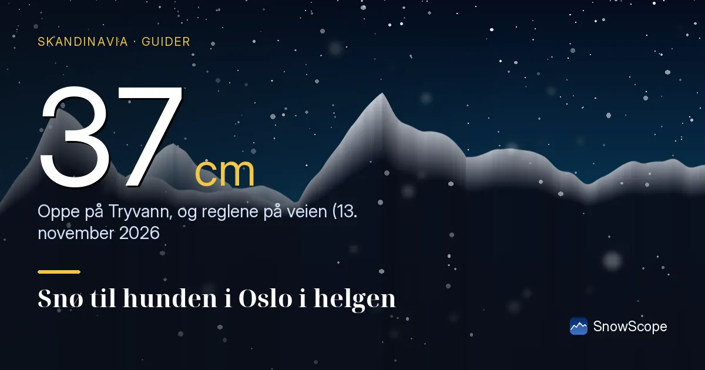

Snø til hunden i Oslo i helgen: 37 cm oppe på Tryvann, og reglene på veien (13. november 2026)
Dette er den første ordentlige snøhelgen for Oslos hunder. I byen er snøen tynn, 4 cm på Blindern, men oppe i Nordmarka er den dyp: 31 cm på Bjørnholt og 37 cm på Tryvannshøgda, det meste falt det siste døgnet. Lørdag er kald og tørr. Her er hvor dere skal, og hvilke regler som gjelder.
Se snøprognosen for Oslo direkte i SnowScope-appenSnødybde, puddervarsler og 3D-kartet, gratis.
Oppover for den ordentlige snøen
Høyden er alt i helgen. I byen er bakken så vidt hvit; nord for byen har Hakadal på 170 m 15 cm, og høyere oppe i Nordmarka ligger det 31 til 37 cm. Beste plan er å ta hunden opp til skogkanten, rundt Frognerseteren, Sognsvann eller åsene ved Tryvann.
Lørdag er dagen: tørt, fra rundt -4 °C om natten til noen få plussgrader. Søndag blir mildere, og mandag gir rundt 10 mm regn, som tar snøen i byen først.

Båndtvang i november
Den nasjonale båndtvangen i Norge gjelder 1. april til 20. august, så den er over. Men Oslos egne regler krever fortsatt at du har kontroll med hunden på offentlig sted, med bånd eller på annen måte, og noen naturreservater, som Østensjøvannet, har båndtvang hele året. I vintre med spesielle snø- og kuldeforhold kan kommunen også vedta ekstraordinær båndtvang av hensyn til viltet, så følg med på kommunens sider hvis snøen blir liggende.
Uten bånd uten bekymring: byen har 10 friområder for hund, blant dem Hundejordet i Frognerparken, Styggedalen ved Bogstad, Isdammen på Årvoll, Skraperudtjern og Ola Narr på Tøyen.
Brøytede skogsveier i Marka
Om vinteren brøyter kommunen en rekke skogsveier i Marka for gående, flere av dem med belysning. Runden rundt Sognsvann er litt over 3 km; Midtstuen–Tryvann er ca. 4,5 km; fra Hammeren i Maridalen går en brøytet skogsvei på 4 km opp til Ullevålseter. Mellom Skar og Øyungen er østsiden brøytet vei og vestsiden preparert skiløype. Med så mye nysnø, sjekk at brøytingen har startet før dere går.
Tips til skiløpere
- Hold hunden på veisiden der en brøytet vei går ved siden av en skiløype, som ved Øyungen: skiløpere og hunder deler skogen bedre slik.
- Snø klumper seg mellom tærne på langhårede hunder; klipp potehårene eller bruk sokker på lengre turer.
- Kort dagslys: lys på halsbåndet og refleksvest til dere begge på skogsveiene.
Flere kart (eksterne nettsteder)
Referanser og kilder
- MET Norway, free meteorological data (station reports) www.met.no/en/free-meteorological-data
- Ogimet, archive of the international SYNOP station reports (Norway, WMO block 01) www.ogimet.com/
- Oslo kommune, båndtvang og hundeparker (leash rules and the dog areas) www.oslo.kommune.no/natur-kultur-og-fritid/tur-og-friluftsliv/besoksgard-hundepark-og-viltforvaltning/bandtvang-og-hundepark/
- Oslo kommune, Hundejordet in Frognerparken, off-leash area for dogs www.oslo.kommune.no/natur-kultur-og-fritid/tur-og-friluftsliv/parker-og-lekeplasser/hundejordet-frognerparken-friomrade-for-hund/
- Oslo kommune, walking in Marka on ploughed forest roads in winter www.oslo.kommune.no/natur-kultur-og-fritid/tur-og-friluftsliv/marka/her-kan-du-ga-til-fots-i-marka-pa-broyta-skogsvei/
- Lovdata, lov om hundehold (hundeloven), § 6 lovdata.no/dokument/NL/lov/2003-07-04-74
- Open-Meteo, weather forecast data (ECMWF and ICON models) open-meteo.com/
Om tallene
Snødybde i dag: målt ved værstasjoner om morgenen 13. november 2026 (Meteorologisk institutts stasjonsrapporter i det internasjonale SYNOP-formatet). En stasjon måler snøen på sin egen lille flekk, så noen kilometer unna og hundre meter høyere kan bakken se annerledes ut. Vanlig snødybde for datoen: SnowScopes snøhistorikk, 46 vintre (1980-81 til 2025-26), en modell av fortiden i byens høyde, ikke en stasjonsserie. Helgen: to værmodeller (ECMWF IFS og DWD ICON via Open-Meteo), oppgitt som et spenn. Steder og regler: de offisielle sidene nedenfor.
Siter denne rapporten
For forskning, undervisning eller presse: tallene og diagrammene kan brukes fritt under CC BY 4.0 med denne kildehenvisningen.
SnowScope (2026), Snø til hunden i Oslo i helgen: 37 cm oppe på Tryvann, og reglene på veien (13. november 2026), https://snowscope.app/blog/nb/2026/11/oslo-dog-snow-weekend-13-november-2026.html, hentet 2026-11-13
SnowScope (Atlas Labs). (2026, November 13). Snø til hunden i Oslo i helgen: 37 cm oppe på Tryvann, og reglene på veien (13. november 2026). SnowScope snow reports. https://snowscope.app/blog/nb/2026/11/oslo-dog-snow-weekend-13-november-2026.html
BibTeX
@misc{snowscope2026oslodogsnowweekend13nove,
author = {{SnowScope (Atlas Labs)}},
title = {Snø til hunden i Oslo i helgen: 37 cm oppe på Tryvann, og reglene på veien (13. november 2026)},
year = {2026},
month = nov,
howpublished = {\url{https://snowscope.app/blog/nb/2026/11/oslo-dog-snow-weekend-13-november-2026.html}},
note = {Published 2026-11-14 13:29 UTC; accessed 2026-11-13}
}· CC BY 4.0 · Metoder, data og verktøy →
Følg Oslo
Gratis: en melding når nysnø er på vei, og prognosen hver morgen.